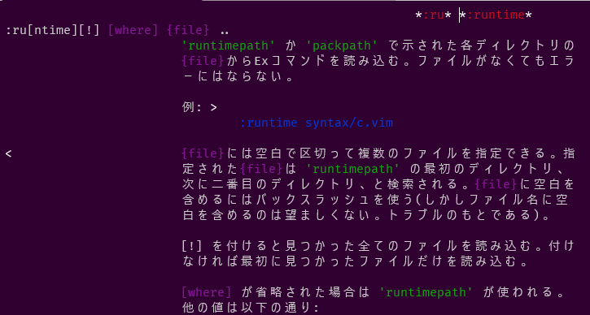

最近dotfiles管理周りを色々やってます。
このタイミングで何度かあきらめているVim周りも整備してVimで開発もできたらいいなーと思いました。
選択肢としては、NeoVimかVim8かみたいなところでシンプルなVimの機能を使ってちゃんと理解しながら整備していきたいと思ったのでVim8で設定等をやっていこうと思っています。
プラグイン管理をどうするか問題
次に、プラグイン管理をどうするかで悩みました。
色々調べてみて、
- プラグイン管理をするためのプラグインを入れたくない
- Vim8からは標準の機能でパッケージ管理ができる
という点で、今回はVim8の標準のパッケージ管理を使ってプラグインを管理していこうと思います。
Vim8標準のパッケージ管理
Vim8標準のプラグインマネージャーは、特定のディレクトリ配下に配置されているプラグインを読み込む機能を持つ。
~/.vim/pack/*/start/*- 起動時に
runtimepathに追加され、ロードされる。
- 起動時に
~/.vim/pack/*/opt/*:packadd mypluginでロードできる。任意のタイミングでロードできる。
例えば、次のようなイメージ
mapackageとmypluginの部分はどんな名前でもよい。
.vim
└── pack # vim8標準のパッケージ管理
└── mypackage # どんな名前でもOK
└── start
│ └── myplugin # 起動時に読み込プラグインを配置
└── opt
└── myplugin # :packadd mypluginでロードするプラグインを配置
opt配下のプラグインは任意のタイミングで読み込みたいプラグインを配置するようだ。
インストール、更新、削除するのに便利なコマンド等はないみたいだが、シェルスクリプトで代用している記事もいくつか見たのでシェルスクリプトで代用する方向で一旦よさそう。
Vim8の標準パッケージ管理でvim-jaプラグインを入れる
Vim8のパッケージ管理について大体わかったので、手始めにvimのhelpコマンドの説明を日本語化してくれるvim-jaというプラグインを入れてみる。
# パッケージ管理のディレクトリ作成
mkdir -p ~/.vim/pack/mypackage/start
# vim-jaプラグインをダウンロード
cd ~/vim/pack/mypackage/start
git clone https://github.com/vim-jp/vimdoc-ja.git
# vimrc作成
cd ~/.vim
vi vimrc
vimrcに設定を追加する。
set helplang=ja,en
:help runtimeで日本語化されたことを確認する

まとめ
Vim8の標準のパッケージ管理を使って、vim-jaプラグインを入れてみた。
特定のディレクトリにプラグインを入れるだけなのでシンプルで簡単だった。
インストール、更新、削除まわりやdotfiles管理する場合はシェルスクリプトが必要になりそうだが、ひとまずよさそうな感じだ。
参考
プラグインマネージャーからVim8標準のパッケージ機能に移行した話 | oliva Blog